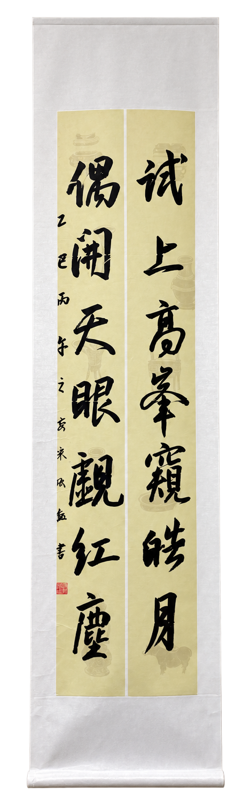

School life
My Time at School
School has been more than classes for me. It is where my friends and I stay after school to prepare for competitions, work through difficult problems, and share small victories across the seasons. When studying leaves me restless, I often sit in the calligraphy room and write for a while. The steady rhythm of each stroke helps me slow down and return to my work with a clearer mind. These ordinary moments make school feel like a community, not only a place to study.
School days
Calligraphy
